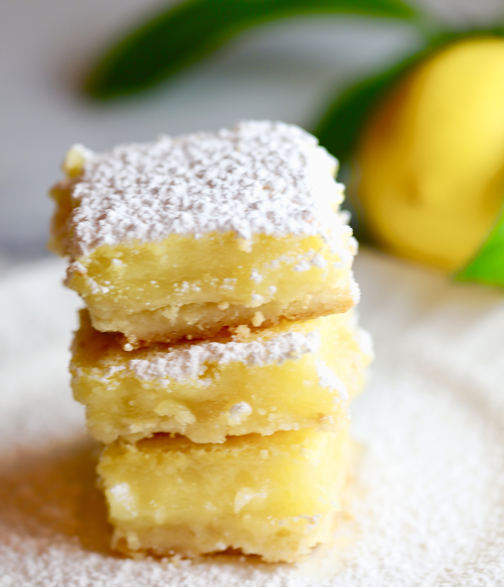

Tasty Summer Lemon Bars

This Fudge oatmeal bar recipe is a family tradition. They were first sold by my grandmother at her cafe in Klamath Falls Oregon.
These fudge oatmeal bars are warm, chocolately, buttery, and save extremely well. They've earned legendary status with my camping
group.
Ingredients
- 1/2 Cup Butter
- 1/2 Cup Powdered Sugar
- 1 Cup sifted flour
- 1/8 tablespoon salt
- 1 cup sugar
- 2 tablespoons flour
- 2 Eggs lightly beaten
- 2 tablespoons lemon juice
- Zest of 1 lemon
Instructions
- Mix softened butter with powered sugar, sifted flour and salt. Pat into 9x9 pan and bake at 350 for 20 mins
-
Mix together 2 tablespoons flour and 1 cup sugar. Mix with Eggs, lemon juice, lemon zest.
-
Pour lemon mixture over baked crust, bake at 325 for 25 minutes
-
top with powdered sugar